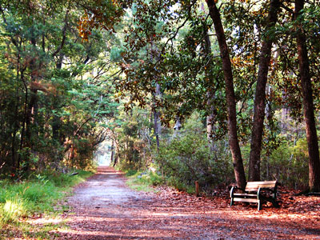
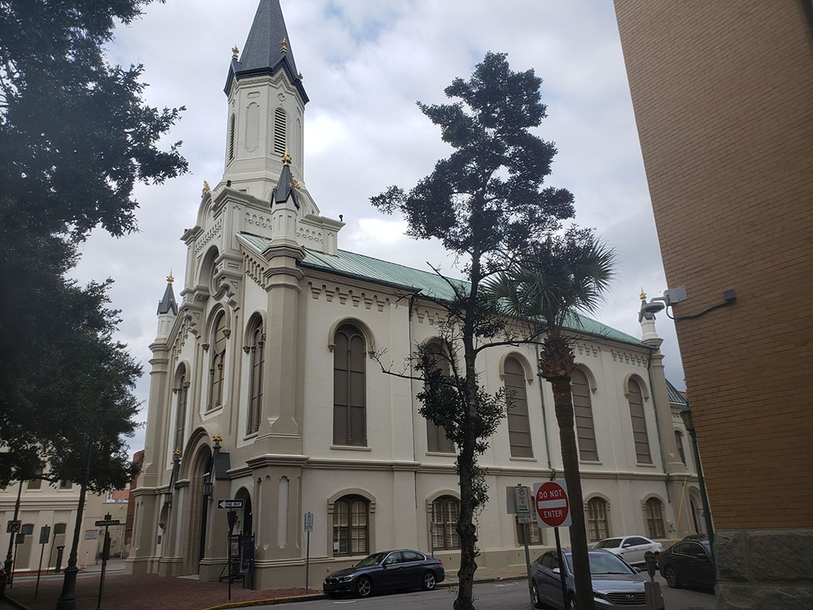
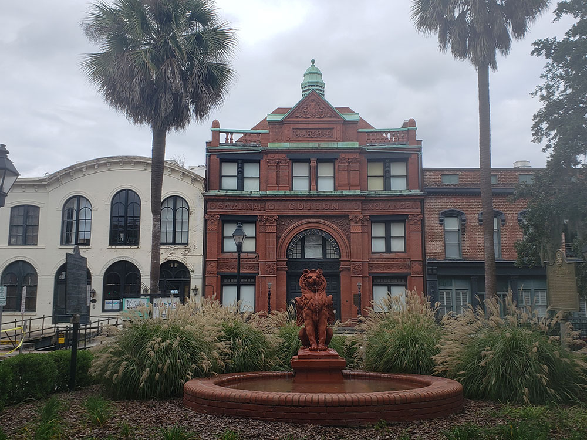
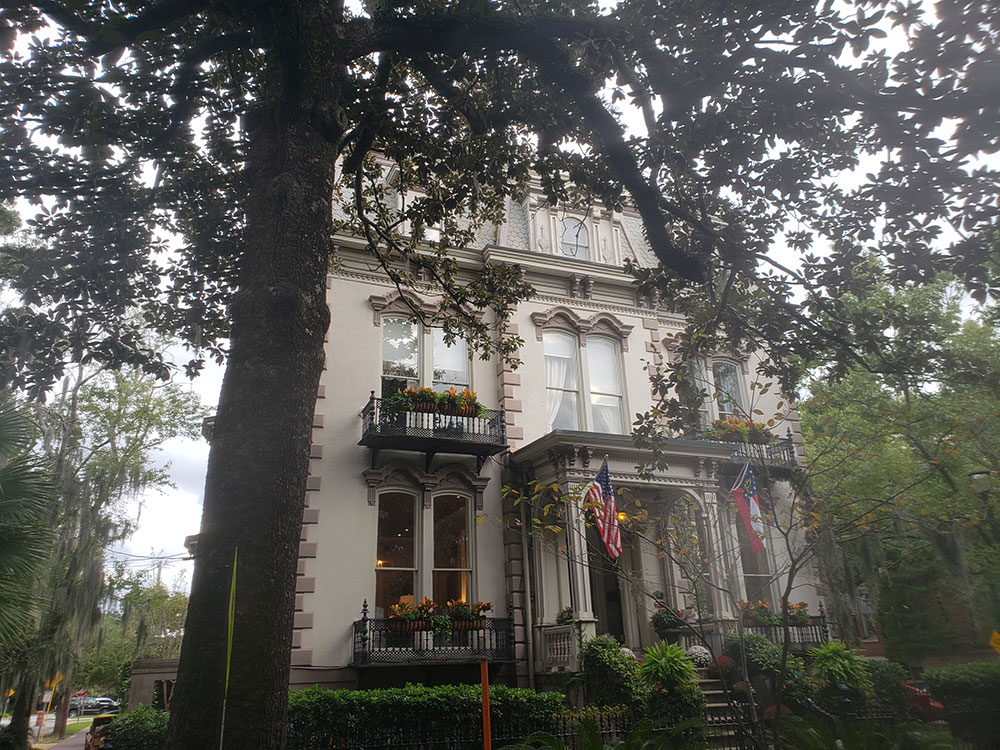
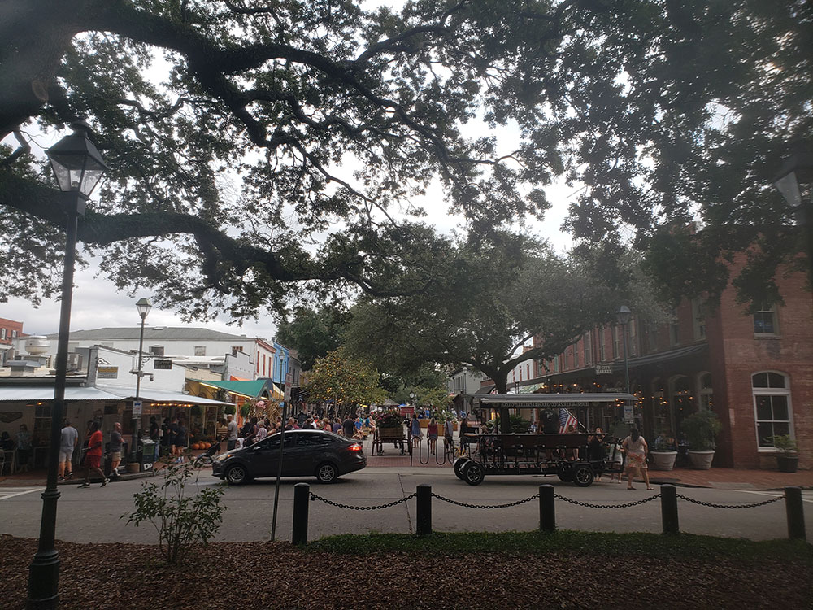
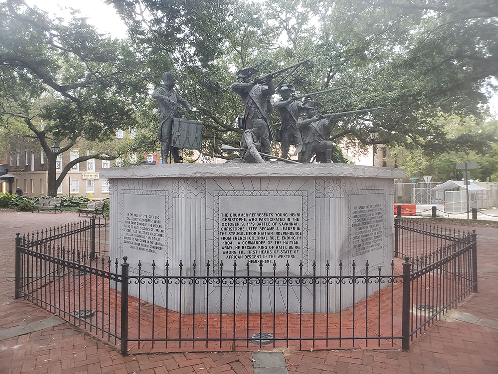

Savannah Travel Guide
Oldest city in Georgia established in 1733 on the Savannah River attracts millions of visitors to its cobblestone streets, parks, and notable historic buildings
Top Locations


-400.jpg)

Places to See in Savannah
Bonaventure Cemetery
Rural cemetery located on a scenic bluff of the Wilmington River, east of Savannah, featured in the 1994 novel Midnight in the Garden of Good and Evil
Cathedral Basilica of St. John the Baptist
Roman Catholic cathedral and minor basilica in Lafayette Square in Savannah, Georgia
Colonial Park Cemetery
Historic cemetery located in downtown Savannah that became a city park in 1896, 43 years after burials in the cemetery ceased
Congregation Mickve Israel
One of the oldest synagogues in the United States and is a rare example of a Gothic-style synagogue
Emmet Park
Urban park in Savannah, located in the northeastern corner of the city's historic downtown area about 300 feet (91 m) from the Savannah River's southern banks
Forsyth Park
30-acre park with basketball & tennis courts, paths, and a historic fountain
Fort McAllister State Park
Scenic riverside site featuring preserved Civil War earthworks, a museum, and outdoor recreation including camping, fishing, and hiking.
Fort Pulaski National Monument
National monument preserves fort located on Cockspur Island between Savannah and Tybee Island
Old Fort Jackson
Early 19th-century brick fortification featuring daily cannon firings, historical reenactments, and interactive exhibits on coastal defense.
The Olde Pink House
Restaurant and tavern in Savannah, in the northwestern trust lot of Reynolds Square, the building dates from 1771
Owens-Thomas House & Slave Quarters
An 1819 Regency-style urban mansion paired with one of the earliest and best-preserved intact urban slave quarters in the South, showcasing early American indoor plumbing and the intertwined lives of a wealthy household and the enslaved people who ran it.
River Street
Commercial street and promenade in Savannah, Georgia. It runs along the southern edge of the Savannah River for 2 miles housing restaurants, cafés and craft shops, and is one of the city's major tourist attractions
DXR, CC BY-SA 4.0, via Wikimedia Commons; Image Size Adjusted

Savannah City Hall
Seat of government for the city of Savannahan and an example of Renaissance Revival architecture and featuring an exterior of limestone and granite, covered in gold leaf

Britt Reints from Pittsburgh, PA, CC BY 2.0, via Wikimedia Commons; Image Size Adjusted

Skidaway Island State Park
State park near Savannah that borders Skidaway narrows, a part of Georgia's intracoastal waterway with trails winding through maritime forest and past salt marsh, leading to a boardwalk and observation tower

Sqaures of Savannah
Savannah's squares known for their aesthetic beauty are named in honor or in memory of a person, persons or historical event, and many contain monuments, markers, memorials, statues, plaques, and other tributes
Telfair Academy-of Arts and Sciences
First public art museum in the Southern United States containing a collection of over 4,500 American and European paintings, sculptures, and works on paper
Tybee Beach
City and a barrier island located 18 miles east of Savannah, which has long been a quiet getaway for the residents of Savannah, has become a popular vacation spot with tourists from outside the Savannah metropolitan area
Tybee Island Light Station and Museum
Historic maritime site featuring a fully restored lighthouse, keeper's cottages, and a museum chronicling over 400 years of coastal history.

Minipaula, CC BY-SA 3.0, via Wikimedia Commons; Image Size Adjusted

Wormsloe Historic Site
State historic site protecting part of what was once the Wormsloe Plantation, a large estate established by one of Georgia's colonial founders.
Overview
Savannah is Georgia's oldest city, founded in 1733 on a bluff above the Savannah River near the Atlantic coast, and it is known for its graceful historic district, with 22 shaded squares, oak trees draped in Spanish moss, and elegant antebellum architecture. It is also famous for its Southern hospitality, its ghost stories, its role in the book and film Midnight in the Garden of Good and Evil, and the St. Patrick's Day celebration, one of the largest in the country. The city was designed by its founder, James Oglethorpe, in a pattern of grids and public squares that survives today.
Visitors come to Savannah to stroll the historic squares and Forsyth Park, to walk River Street along the waterfront, and to visit Bonaventure Cemetery. They also come for the historic house museums such as the Owens-Thomas House, for Fort Pulaski, for the beaches of Tybee Island, and for Southern food.
History
General James Oglethorpe landed at Yamacraw Bluff in 1733 with the first colonists of the Georgia colony, and laid out the city in a grid of wards, each centered on a public square. Savannah grew as a port for cotton and rice and was captured by the British in the Revolution and was the site of a major siege in 1779. In December 1864, General Sherman reached the city at the end of his March to the Sea, and it surrendered without a fight, and he is said to have presented it to President Lincoln as a Christmas gift, sparing it from burning. In the 1950s, a group of local women saved historic buildings from demolition, which launched the preservation movement, and Juliette Gordon Low, the founder of the Girl Scouts, was born here.
Sightseeing and Popular Landmarks
The Historic District is a National Historic Landmark with 22 squares, many of them with fountains, statues, and live oaks, such as Emmet Park and the other squares. Forsyth Park, with its fountain, is the city's central park, and River Street has restored cotton warehouses with shops and restaurants. The Cathedral Basilica of St. John the Baptist has twin spires, and the Colonial Park Cemetery, Congregation Mickve Israel, and City Hall are other landmarks.
Culture and Museums
The Telfair Museums are among the oldest art museums in the South, and the Owens-Thomas House & Slave Quarters is a Regency mansion with an urban slave quarters. The Savannah College of Art and Design (SCAD) has museums and galleries, and the Juliette Gordon Low Birthplace is a museum for the Girl Scouts. Old Fort Jackson is a restored fort on the river, and the Savannah Music Festival and the Savannah Film Festival are held each year. The Olde Pink House is a famous restaurant in an 18th-century mansion.
Parks
Forsyth Park, a 30-acre park with a fountain from the 1850s, is the city's best-known green space, and Wormsloe Historic Site has an avenue of live oaks leading to the ruins of a colonial house. Fort Pulaski National Monument, on Cockspur Island, is a Civil War fort, and Tybee Island, 18 miles east, has a beach and a lighthouse. Skidaway Island State Park and Fort McAllister State Park offer trails and camping.
Seasons and Weather
Savannah has a humid subtropical climate. Summers are hot and humid, with highs in the low 90s°F, and winters are mild, with highs in the 60s°F and almost no snow. Spring and fall are the most pleasant seasons, with azaleas in March and April, and St. Patrick's Day in March is the busiest time. Hurricane season runs from June to November.
This article uses material from Wikipedia as well as information from official tourism and institutional sources. Key references include Visit Savannah, Telfair Museums, National Park Service Fort Pulaski National Monument, Georgia Tourism, and National Weather Service Charleston. Wikipedia material is from the articles "Savannah, Georgia" and "Historic Savannah", and is available under the Creative Commons Attribution-Share-Alike License 3.0.






